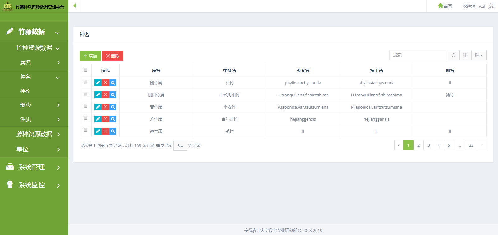
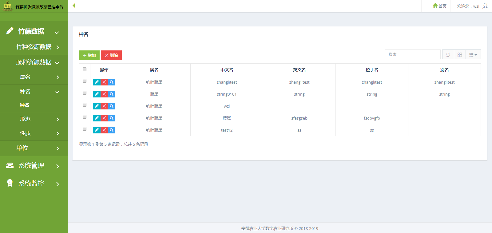

图1.1 首页
通过登录用户名，密码进入该系统，如图1.1所示。
●进入系统首先是首页，显示该系统的介绍。
●点击右上角用户头像，会出现退出该系统，修改登入密码，帮助（辅助系统用户说明书）操作。
图2.1 种质资源数据
点击““竹藤数据”菜单项，如图2.1所示。
●竹藤数据菜单栏包括竹种资源数据，藤种资源数据，单位。
图3.1 竹种资源数据
点击““竹藤数据-竹种资源数据”菜单项，如图3.1所示。
●可以看到竹种属名，种名，形态，性质。
图3.2 竹种属名
点击““竹种属表”菜单项，如图3.2所示。
●显示竹种属于哪个属，属的中文名，英文名，拉丁名，别名等信息。
●可以对竹属表进行新增，修改，查看，单个删除，批量删除等操作；
图3.3 竹种种名
点击““竹种种名”菜单项，如图3.3所示。
●显示竹种属于哪个种，种的中文名，英文名，别名，种类编码，上传图片，上传视频等信息。
●可以对竹种表进行新增，修改，查看，单个删除，批量删除等操作；
图3.4 地下茎
点击““形态”菜单项，如图3.4所示。
●右侧菜单栏可以看到竹种形态里有地下茎，竹竿表，箨环表，箨鞘表，箨耳表，箨舌表，箨片表，竹叶表，花果形态表。
●以图3.4中地下茎为例，可以对竹竿表进行新增，修改，查看，单个删除，批量删除等操作；
图3.5 组织比量
点击““性质”菜单项，如图3.5所示。
●右侧菜单栏可以看到竹种性质里有化学成分表，力学性质表，物理性质表，结构特征表，解剖特征表；解剖特征表里有纤维形态特征表，组织比量表，导管形态特征表，维管束形态特征表。
●以图3.5中组织比量为例，可以对组织比量进行新增，修改，查看，单个删除，批量删除等操作；
图4.1 藤种资源数据
点击““竹藤数据-藤种资源数据”菜单项，如图4.1所示。
●可以看到藤种属名，种名，形态，性质。
图4.2 藤种属名
点击““属名”菜单项，如图4.2所示。
●显示藤种属于哪个属，属的中文名，英文名，拉丁名，别名等信息。
●可以对藤属表进行新增，修改，查看，单个删除，批量删除等操作；
图4.3 藤种种名
点击““种名”菜单项，如图4.3所示。
●显示藤种属于哪个种，种的中文名，英文名，别名，种类编码，上传图片，上传视频等信息。
●可以对藤种表进行新增，修改，查看，单个删除，批量删除等操作；
图4.3 竹竿表
点击““形态”菜单项，如图4.3所示。
●右侧菜单栏可以看到藤种形态里有地下茎，竹竿表，箨环表，箨鞘表，箨耳表，箨舌表，箨片表，竹叶表，花果形态表。
●以图4.3中竹竿表为例，可以对竹竿表进行新增，修改，查看，单个删除，批量删除等操作；
图4.4 物理性质表
点击““性质”菜单项，如图4.4所示。
●右侧菜单栏可以看到藤种性质里有化学成分表，力学性质表，物理性质表，结构特征表，解剖特征表；解剖特征表里有纤维形态特征表，组织比量表，导管形态特征表，维管束形态特征表。
●以图4.4中物理性质表为例，可以对物理性质表进行新增，修改，查看，单个删除，批量删除等操作；
图5.1 单位
点击““单位”，如图5.1所示。
●显示有哪些单位名称，单位名称的英语，标注。
●可以对单位表进行新增，修改，查看，单个删除，批量删除等操作；
图6.1 用户管理
点击““系统管理”菜单项中的用户管理，如图6.1所示。
●显示用户姓名，所在部门，办公室电话，是否是激活状态（只有激活状态才可以登入）等。
●可以对用户管理进行新增，修改，查看，单个删除，批量删除等操作；
图6.2 角色管理
点击““用户管理”菜单项中的角色管理，如图6.2所示。
●显示角色名，备注，编号等。
●可以对角色管理进行新增，修改，查看，单个删除，批量删除等操作；
图7.1 系统日志
点击““系统监控”菜单项中的系统日志，如图7.1所示。
●显示登录该系统的用户名，操作时间，操作地址，操作IP地址，请求参数，类方法等。
●可以按照时间上下限查询系统日志；